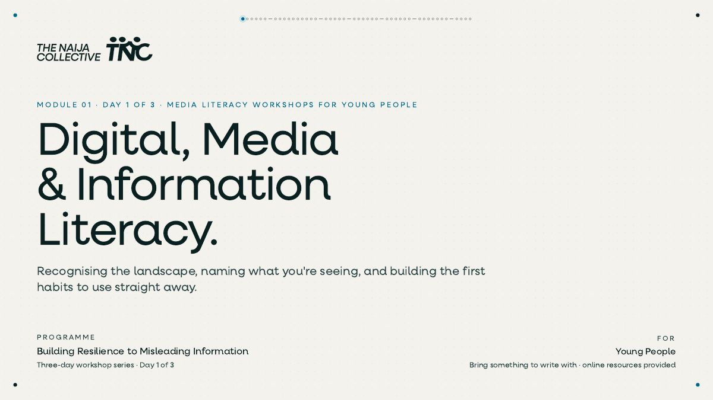
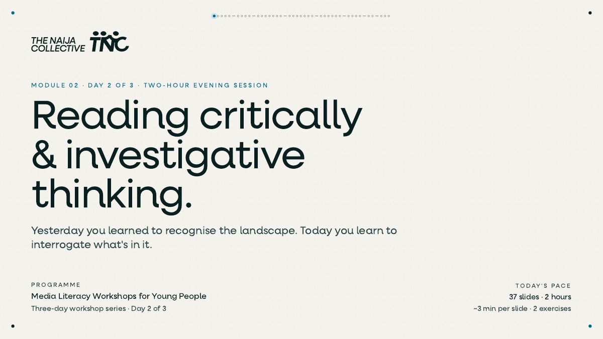
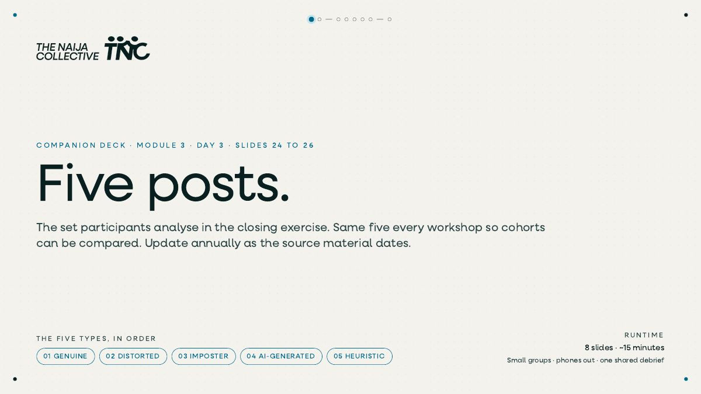

Module 1 · Day 1 · 44 slides
Digital, Media and Information Literacy
The landscape, the vocabulary and the first habits.
A filmed three-day programme that builds young people's resilience to misleading information, and equips them to pass what they learn on to friends and family.
Three aims hold the programme together: build resilience to misleading information, understand how widely it operates across social, digital and traditional media, and equip participants to share what they learn in their own words.
Designed the curriculum, built the module decks and the companion exercise deck, including pre-workshop surveys, timed exercises and take-home checklists, and led the sessions.
Modules 1 and 2 and the Day 3 closing exercise, as interactive decks and PDFs.

The landscape, the vocabulary and the first habits.

Three habits, six tactics, four ways propaganda scales.

The comparable closing exercise: CRAAP, triangulation, heuristics and AI checks.